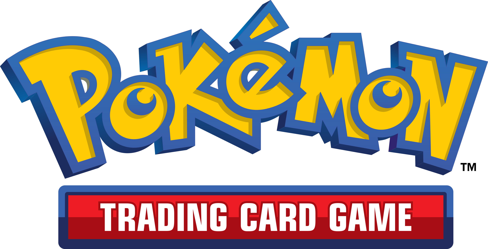
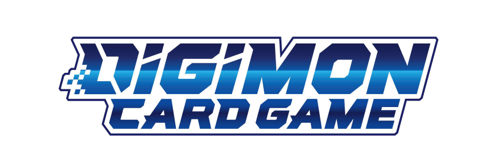
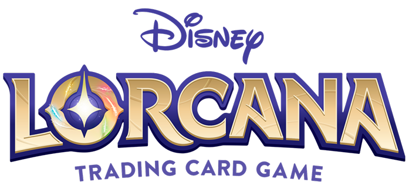
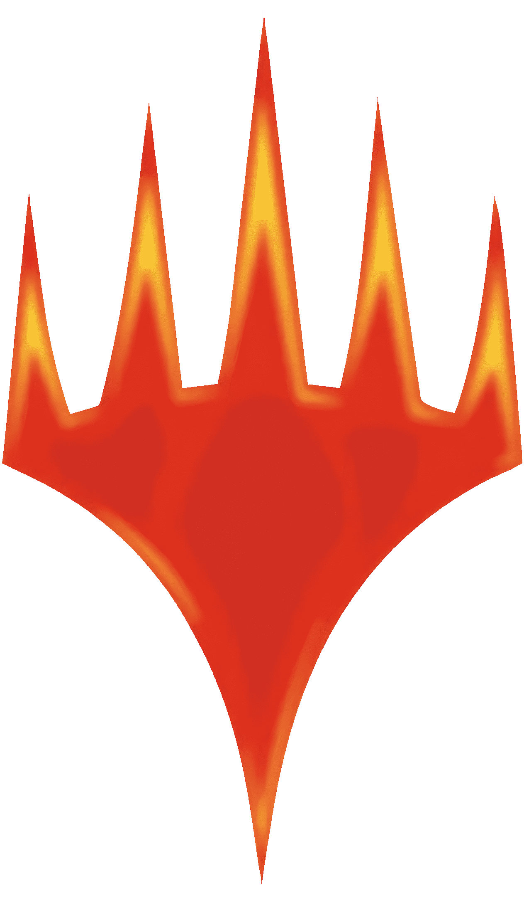
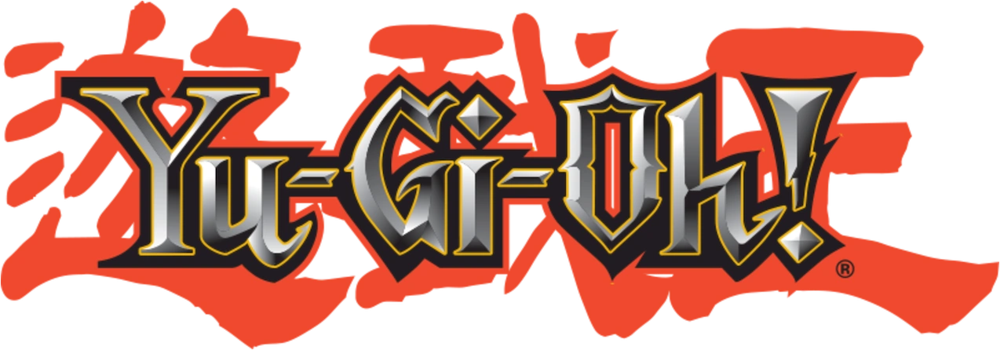

Sobres Pokémon TCG
El sobre normal de TCG es la presentación más habitual para ampliar una colección. Contiene cartas aleatorias pertenecientes a la expansión a la que pertenezca, se recomienda mirar las cartas que contiene cada expansión antes de comprar.
Qué incluye un sobre
- 10 cartas por sobre en la mayoría de expansiones modernas.
- Al menos una carta de rareza poco común o superior garantizada.
- Posibilidad de carta holográfica, reverse holo o carta ultra rara.
- Algunas expansiones incluyen cartas de código para Pokémon TCG Live.
Qué puede encontrar en el sobre
- Cartas de Pokémon, Entrenador y Energía.
- Rarezas: Common, Uncommon, Rare, Double Rare, Ultra Rare, Illustration Rare, Special Illustration Rare e Hyper Rare.
- Versiones reverse holo en la mayoría de sobres.
- Cartas secretas con numeración superior al total del set.

Sobres Digimon TCG
El sobre normal de Digimon TCG contiene cartas aleatorias de la expansión correspondiente y está orientado tanto al coleccionista como al jugador que busca completar su mazo.
Qué incluye un sobre
- 12 cartas por sobre en la mayoría de expansiones.
- Una carta de rareza Rare o superior garantizada.
- Posibilidad de Super Rare, Secret Rare o Alternative Art.
- Incluye cartas de Digimon, Tamer, Option y Digi-Egg según el set.
Qué puede encontrar en el sobre
- Rarezas: Common, Uncommon, Rare, Super Rare y Secret Rare.
- Versiones Parallel Rare y Alternative Art con ilustraciones exclusivas.
- Cartas foil en rarezas altas.

Sobres Disney Lorcana
El sobre normal de Disney Lorcana ofrece cartas aleatorias del set correspondiente, con ilustraciones originales de personajes Disney y un enfoque pensado tanto para coleccionistas como para jugadores.
Qué incluye un sobre
- 12 cartas por sobre.
- Dos cartas de rareza Rare o superior garantizadas.
- Una carta foil garantizada en cada sobre.
- Posibilidad de Super Rare, Legendary o Enchanted.
Qué puede encontrar en el sobre
- Cartas de Personaje, Acción, Objeto y Canción.
- Rarezas: Common, Uncommon, Rare, Super Rare, Legendary y Enchanted.
- Versiones foil de cualquier rareza.
- Ilustraciones alternativas en las cartas Enchanted.

Sobres Magic: The Gathering
El sobre normal de Magic: The Gathering es el Draft Booster, la presentación clásica con la que se juega en formato Draft y Sealed, y también la más habitual para abrir sobres de la expansión vigente.
Qué incluye un sobre
- 15 cartas por sobre.
- Una carta de rareza Rare o Mythic Rare garantizada.
- Una carta foil en la mayoría de sobres.
- Una carta de tierra básica o carta común adicional según el set.
Qué puede encontrar en el sobre
- Tipos: Tierra, Criatura, Encantamiento, Instantáneo, Conjuro, Artefacto y Planeswalker.
- Rarezas: Common, Uncommon, Rare y Mythic Rare.
- Versiones foil y, en algunos sets, tratamientos especiales como borderless o showcase.
- Cartas de la lista especial en sets concretos.

Sobres Yu-Gi-Oh!
El sobre normal de Yu-Gi-Oh! es el Core Booster, la presentación principal para obtener cartas de las nuevas expansiones y completar mazos.
Qué incluye un sobre
- 9 cartas por sobre.
- Una carta de rareza Rare o superior garantizada.
- Posibilidad de Super Rare, Ultra Rare, Secret Rare, Ultimate Rare, Ghost Rare o Starlight Rare.
- Algunos sobres incluyen cartas con acabados especiales.
Qué puede encontrar en el sobre
- Cartas de Monstruo, Mágica y Trampa.
- Monstruos de Fusión, Sincronía, Xyz, Péndulo y Enlace.
- Rarezas altas con acabado foil o texturizado.
- Cartas de arquetipo y soporte para mazos competitivos.
Resumen comparativo de sobres
| Juego | Cartas por sobre | Rareza garantizada | Contenido adicional destacado |
|---|---|---|---|
| Pokémon TCG | 10 | Poco común o superior | Posible reverse holo y una carta de código |
| Digimon TCG | 12 | Rare o superior | Posible Parallel Rare o Alternative Art |
| Disney Lorcana | 12 | Dos Rare o superior | Una carta foil garantizada |
| Magic: The Gathering | 15 | Rare o Mythic Rare | Una carta foil en la mayoría de sobres |
| Yu-Gi-Oh! | 9 | Rare o superior | Posible Ghost Rare o Starlight Rare |